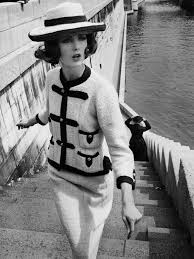

WELCOME TO JEWELRY!!
10 years after the debut of the first high jewelry collection, the CHANEL Fine Jewelry Creation Studio draws inspiration from the timeless BIJOUX DE DIAMANTS pieces to tell a new tale. The Collection 1932 represents a journey beyond time and space, where the movement of the planets and the kinetics of the stars are observed. From the original collection, Patrice Leguéreau, Director of the CHANEL Fine Jewelry Creation Studio, preserves the celestial theme, the purity of the lines and the freedom of the body. The perfect roundness of the diamonds gives the symbols a sense of eternity, enhanced by rays of light that make them sparkle.
Chanel established her jewelry business in 1924 and gave Count Etienne de Beaumont control of it. She occasionally blended actual stones with fake stones when creating jewelry. In 1932, she and Paul Iribe planned a grand presentation of real diamond jewelry to fight the financial catastrophe.
.jpg )
In 1932, Chanel began experimenting with her first and only fine jewelry collection, dubbed the Bijoux de Diamants.
The iconic Chanel brand, with its universally recognized interlocking Cs logo, is one with a long and illustrious history. Gabrielle Bonheur "Coco" Chanel was born in France in 1883. Historians credit her with being the driving force behind a dramatic change in women’s apparel following World War I. As a fashion designer, her innovative ideas freed women from the restrictive, corseted look that was the standard at the time. Instead, she promoted a style that emphasized a more sporty, casual aesthetic. From clothing, she expanded her creative influence to fragrances, handbags, and jewelry. At one point, her Chanel No. 5 was arguably the most well-known perfume in the world and she was one of the world’s most prominent fashion experts. In fact, she is the only designer included on Time magazine's list of the 100 most influential people of the 20th century. So let’s take a closer look at the history of Chanel, one of fashions most recognized luxury brands.

Coco Chanel, who had a large collection of fine jewelry from her relationships with a number of wealthy suitors, took the groundbreaking approach of mixing fine jewelry with costume jewelry when she accessorized. People were both shocked and intrigued by the fact that she would use layers of faux pearl necklaces and stacks of bracelets to create visual interest to complement her minimalist clothing designs. That contrast continues to be an essential element of the Chanel allure to this day and a reason that people continue to love Chanel necklaces, Chanel bracelets, Chanel rings, and Chanel earrings.